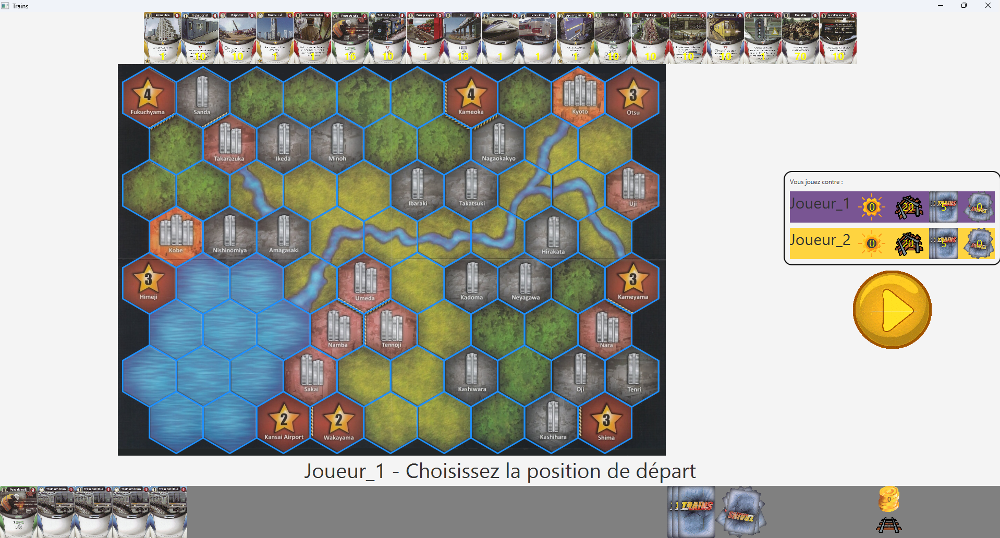

Setting up a complete Docker containerisation infrastructure to orchestrate multi-service applications. This project automated deployment and made environments portable from development to production.

This project consisted of building a complete Docker infrastructure to orchestrate several interconnected services. The goal was to containerise a full-stack web application along with its database, web server and auxiliary services.
Development focused on three main aspects: writing optimised Dockerfiles for each service, setting up orchestration with Docker Compose, and applying security and performance best practices.
The main challenge was to reduce the size of the Docker images while keeping every required feature. I used multi-stage build techniques and chose minimal base images (Alpine Linux) to shrink the footprint.
Orchestrating the services and their dependencies required particular care to guarantee a correct start-up order and smooth communication between containers.